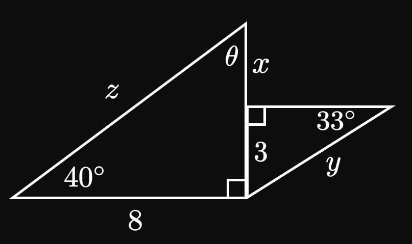
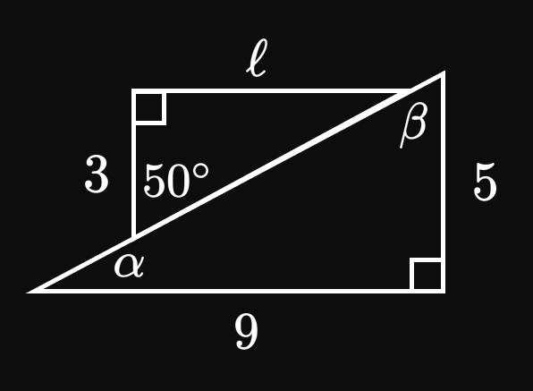
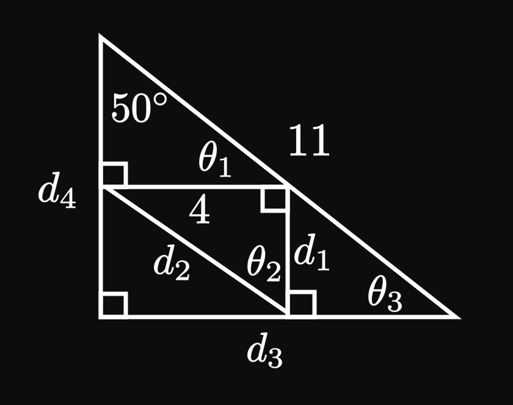
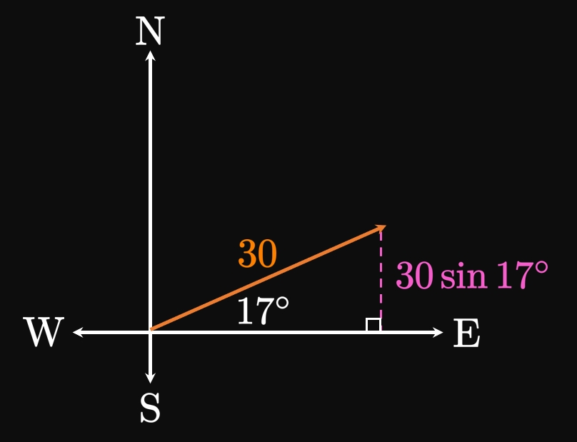
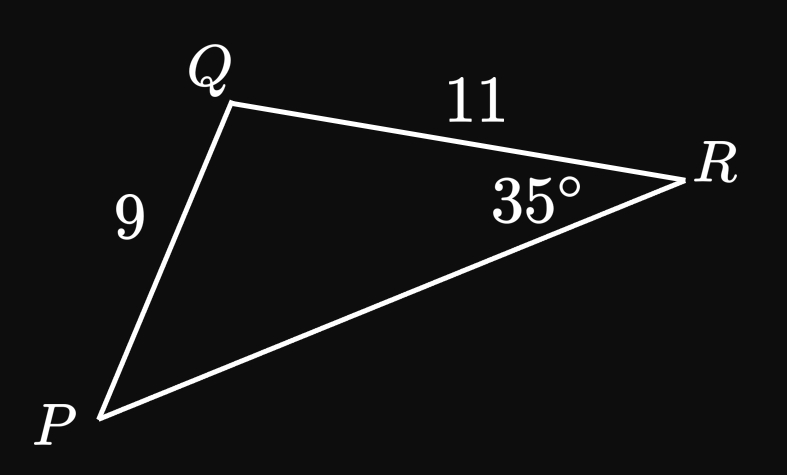
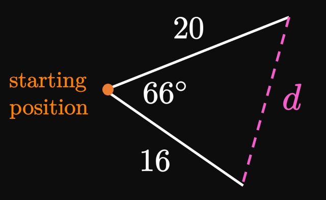
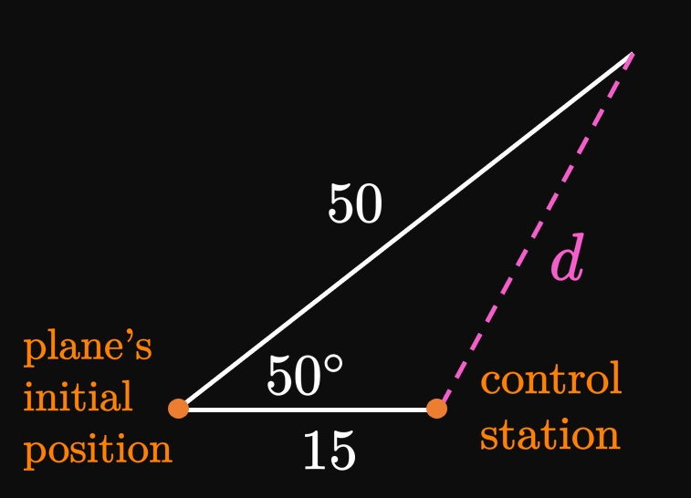
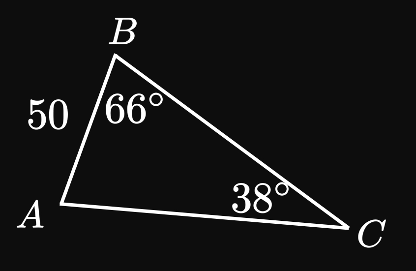
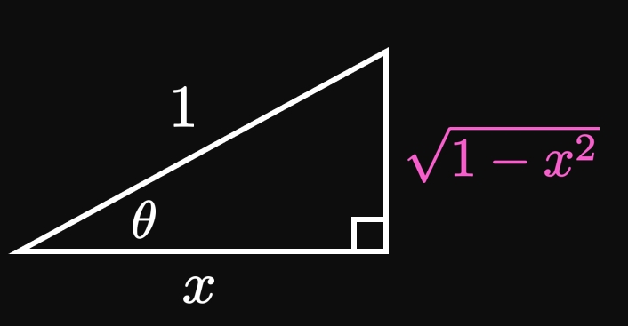

Fill in the blanks:
When given a(n) ___, a trigonometric function outputs a trigonometric ratio.
Conversely, an inverse trigonometric function returns an angle when given a(n) ___.
SOLUTIONangle; trigonometric ratio
EXERCISE 2
Explain the importance of the Unit Circle.
SOLUTION
The Unit Circle enables us to redefine sine and cosine
to have a domain of all real numbers.
(Many applications require these functions to be defined for all real values.)
EXERCISE 3
If \(\sin \theta = 3/4\) and \(\cos \theta = 8/11,\)
then find the remaining four trigonometric functions.
In Figure 15 determine the lengths \(x,\) \(y,\)
and \(z\) and the angle \(\theta.\)

SOLUTION
Since the angles \(\theta\) and \(40 \degree\) are complimentary,
they sum to \(90 \degree\) and so
\[\theta = 90 \degree - 40 \degree = 50 \degree \pd\]
Trigonometry enables us to relate the triangles' angles to their side lengths—for example,
\[
\ba
\cos 40 \degree &= \frac{8}{z} \nl
z &= 8 \sec 40 \degree \approx 10.443 \pd
\ea
\]
Likewise, we have
\[
\ba
\sin 33 \degree &= \frac{3}{y} \nl
y &= 3 \csc 33 \degree \approx 5.508 \pd
\ea
\]
Observe that the entire side opposite to the \(40 \degree\) angle has length \(x + 3.\)
Hence, we get
\[
\ba
\sin 40 \degree &= \frac{x + 3}{8} \nl
x &= 8 \sin 40 \degree - 3 \approx 2.142 \pd
\ea
\]
In summary,
\[
\boxed{
\baat{2}
x &\approx 2.142 \qquad &y &\approx 5.508 \nl
z &\approx 10.443 \degree &\qquad \theta &= 50 \degree
\eaat}
\]
EXERCISE 5
In Figure 16 determine the angles \(\alpha\)
and \(\beta\) and the side length \(\ell.\)

SOLUTION
It is easiest to first find \(\ell,\) as follows:
\[
\ba
\tan 50 \degree &= \frac{\ell}{3} \nl
\ell &= 3 \tan 50 \degree \approx 3.575 \pd
\ea
\]
Also, we have
\[
\ba
\tan \alpha &= \frac{5}{9} \nl
\alpha &= \atan \par{\frac{5}{9}} \approx 29.055 \degree \pd
\ea
\]
Since the angles \(\alpha\) and \(\beta\) are complimentary, we have \(\alpha + \beta = 90 \degree\) and thus
\[\beta \approx 90 \degree - 29.055 \degree = 60.945 \degree \pd\]
In summary, we have
\[\boxed{\alpha \approx 29.055 \degree} \qquad \boxed{\beta \approx 60.945 \degree} \qquad \boxed{\ell \approx 3.575}\]
EXERCISE 6
In Figure 17
find the side lengths \(d_1,\) \(d_2,\) \(d_3,\) and \(d_4\)
and the angles \(\theta_1,\) \(\theta_2,\) and \(\theta_3.\)

SOLUTION
Observe that the \(50 \degree\) angle is complimentary to angles \(\theta_1\) and \(\theta_3.\)
Thus, we have
\[\theta_1 = \theta_3 = 90 \degree - 50 \degree = 40 \degree \pd\]
Also, \(\theta_1\) and \(\theta_2\) are complimentary, so
\[\theta_2 = 90 \degree - \theta_1 = 50 \degree \pd\]
Using trigonometry, it is easiest to first find \(d_3\) and \(d_4,\) as follows:
\[
\baat{2}
d_3 &= 11 \sin 50 \degree &&\approx 8.426 \cma \nl
d_4 &= 11 \cos 50 \degree &&\approx 7.071 \pd
\eaat
\]
Next we find the side lengths of the inner triangle.
We see
\[
\ba
\tan \theta_2 &= \frac{4}{d_1} \nl
d_1 &= 4 \cot 40 \degree \approx 4.767 \pd
\ea
\]
Likewise, we have
\[
\ba
\sin \theta_2 &= \frac{4}{d_2} \nl
d_2 &= 4 \csc 40 \degree \approx 6.223 \pd
\ea
\]
In summary, the side lengths are
\[
\boxed{
\baat{2}
d_1 &\approx 4.767 \qquad &d_2 &\approx 6.223 \nl
d_3 &\approx 8.426 \degree &\qquad d_4 &\approx 7.071
\eaat}
\]
The angles are
\[\boxed{\theta_1 = 40 \degree} \qquad \boxed{\theta_2 = 50 \degree} \qquad \boxed{\theta_3 = 40 \degree}\]
EXERCISE 7
An observer stands \(60\) feet away from a skyscraper.
From the observer's feet,
the angles of elevation
are \(36 \degree\) to window A and \(57 \degree\) to window B.
Calculate the differences in the windows' heights.
SOLUTION
The heights of window \(A\) and \(B\) are, respectively,
\[h_A = 60 \tan 36 \degree \and h_B = 60 \tan 57 \degree \pd\]
So the distance between the windows is
\[h_B - h_A = 60 \tan 57 \degree - 60 \tan 36 \degree \approx \boxed{48.799 \un{ft}}\]
EXERCISE 8
A gust of wind with a speed of \(30\) miles per hour
travels in a direction \(17 \degree\) north of east.
Determine the wind's speed in the north direction.
SOLUTION

Imagine that the wind's speed is the hypotenuse of a right triangle;
then the angle between the hypotenuse and the horizontal axis (east direction) is \(17 \degree.\)
Hence, the component of the speed in the north direction is the opposite side
to the \(17 \degree\) angle, whose length is
\[30 \sin 17 \degree \approx \boxed{8.771 \un{mph}}\]
EXERCISE 9
A wedge has a cross-sectional shape of a right triangle
whose height is \(8\) feet
and width is \(9\) feet.
Find the wedge's angle of elevation.
SOLUTION
The angle of elevation is the angle
whose opposite side is \(9 \un{ft}\)
and adjacent side is \(8 \un{ft}.\)
This angle is therefore
\[\theta = \atan \par{\frac{9}{8}} \approx \boxed{48.366 \degree}\]
EXERCISE 10
Find the angle between the \(x\)-axis and the line \(y = 6x.\)
SOLUTION
Because the line's slope is \(6,\)
\(y\) increases by \(6\) per increase of \(1\) in \(x.\)
Hence, the angle is
\[\theta = \atan \par{\frac{6}{1}} \approx \boxed{80.538 \degree}\]
EXERCISE 11
For
\[\ds \sin 450 \degree\]
find the exact value of the trigonometric expression without a calculator.
SOLUTION
The angles \(450 \degree\) and \(450 \degree - 360 \degree\) \(= 90 \degree\)
are coterminal.
Hence, we have
\[\sin 450 \degree = \sin 90 \degree = \boxed 1\]
EXERCISE 12
For
\[\ds \cos(-135 \degree)\]
find the exact value of the trigonometric expression without a calculator.
SOLUTION
The angles \(-135 \degree\) and \(-135 \degree + 360 \degree\) \(= 225 \degree\)
are coterminal.
We therefore find
\[\cos(-135 \degree) = \cos 225 \degree = \boxed{-\frac{\sqrt 2}{2}}\]
EXERCISE 13
For
\[\ds \sin \frac{15 \pi}{2}\]
find the exact value of the trigonometric expression without a calculator.
SOLUTION
The angle \(15 \pi/2\) is far beyond \([0, 2\pi],\)
the interval of angles with which we are familiar on the Unit Circle.
Thus, let's continue subtracting \(2 \pi\) from \(15 \pi/2\) until
we attain a coterminal angle whose sine we have memorized.
Doing so, we get
\[\sin \frac{15 \pi}{2} = \sin \frac{11 \pi}{2} = \sin \frac{7 \pi}{2} = \sin \frac{3 \pi}{2} = \boxed{-1}\]
EXERCISE 14
For
\[\ds \sec \frac{3 \pi}{4}\]
find the exact value of the trigonometric expression without a calculator.
SOLUTION
If you are not familiar with values of secant,
then you can convert the trigonometric expression to be in terms of cosine, as follows:
\[
\sec \frac{3 \pi}{4} = \frac{1}{\cos \dfrac{3 \pi}{4}} = \frac{1}{-\sqrt 2/2} = \boxed{-\sqrt 2}
\]
EXERCISE 15
For
\[\ds \cot \frac{\pi}{2}\]
find the exact value of the trigonometric expression without a calculator.
SOLUTION
We find
\[\cot \frac{\pi}{2} = \frac{\cos \dfrac{\pi}{2}}{\sin \dfrac{\pi}{2}} = \frac{0}{1} = \boxed 0\]
Note that it is incorrect to say
\[\cot \frac{\pi}{2} = \frac{1}{\tan \dfrac{\pi}{2}}\]
because \(\tan(\pi/2)\) is undefined.
EXERCISE 16
For
\[\ds \tan 510 \degree\]
find the exact value of the trigonometric expression without a calculator.
SOLUTION
Tangent's period is \(180 \degree,\) so let's continue subtracting \(180 \degree\)
to attain coterminal angles. Doing so shows
\[
\tan 510 \degree = \tan 330 \degree = \tan 150 \degree = \boxed{-\frac{\sqrt 3}{3}}
\]
This strategy permits us to find a coterminal
angle in \([0\degree,360 \degree],\)
whose trigonometric ratios are readily known.
EXERCISE 17
For
\[\ds \asin (\sin 45 \degree)\]
evaluate the expression without a calculator.
SOLUTION
Because \(45 \degree\) is in the range of inverse sine,
we cancel out the sine and inverse sine.
Hence,
\[\asin (\sin 45 \degree) = \boxed{45 \degree}\]
EXERCISE 18
For
\[\ds \cos \par{\acos 0}\]
evaluate the expression without a calculator.
SOLUTION
Since cosine and inverse cosine are inverse functions, and
since \(0\) is in the range of cosine,
it follows that
\[\cos(\acos 0) = \boxed 0\]
EXERCISE 19
For
\[\ds \sin \par{\asin \frac{\sqrt 2}{2}}\]
evaluate the expression without a calculator.
SOLUTION
Since sine and inverse sine are inverse functions,
and as \(\sqrt{2}/2\) is in the range of sine,
it follows that
\[\sin \par{\asin \frac{\sqrt 2}{2}} = \boxed{\frac{\sqrt 2}{2}}\]
EXERCISE 20
For
\[\ds \cos \par{\asin \frac{\sqrt 3}{2}}\]
evaluate the expression without a calculator.
SOLUTION
Since \(\sin(\pi/3) = \sqrt 3/2\) and \(\cos(\pi/3) = 1/2,\) we have
\[\cos \par{\asin \frac{\sqrt 3}{2}} = \cos \frac{\pi}{3} = \boxed{\frac{1}{2}}\]
EXERCISE 21
For
\[\ds \sin \par{\asin 4}\]
evaluate the expression without a calculator.
SOLUTIONIt is wrong to cancel out the sine
and inverse sine, concluding that the answer is \(4.\)
Instead, observe that \(\asin 4\) is undefined because the domain of inverse sine is
\([-1, 1].\)
So the entire expression is undefined.
EXERCISE 22
For
\[\ds \acos (\cos 300 \degree)\]
evaluate the expression without a calculator.
SOLUTIONWe cannot say
\[\acos (\cos 300 \degree) = 300 \degree\]
because \(300 \degree\) is outside the range of inverse cosine,
\([0 \degree,180 \degree].\)
Instead, note that \(\cos 300 \degree\) \(= 1/2,\) so
\[\acos (\cos 300 \degree) = \acos \par{\tfrac{1}{2}} = \boxed{60 \degree}\]
This value is in the range of inverse cosine.
EXERCISE 23
For
\[\ds \asin \par{\sin \frac{5 \pi}{4}}\]
evaluate the expression without a calculator.
SOLUTIONIt is wrong to say
\[\asin \par{\sin \frac{5 \pi}{4}} = \frac{5 \pi}{4}\]
because the range of inverse sine is \([-\pi/2, \pi/2].\)
Instead, because \(\sin(5 \pi/4)\) \(= -\sqrt 2/2,\) we get
\[\asin \par{\sin \frac{5 \pi}{4}} = \asin \par{-\frac{\sqrt 2}{2}} = \boxed{-\frac{\pi}{4}}\]
This value is in the range of inverse sine.
SOLUTION
By the Pythagorean identity, we have
\[\sin^2 \theta + \cos^2 \theta = 1 \iffArrow \cos \theta = \pm \sqrt{1 - \sin^2 \theta} \pd\]
We therefore find
\[\cos \theta = \pm \sqrt{1 - \par{-\frac{1}{3}}^2} = \pm \frac{2 \sqrt{2}}{3} \pd\]
Since \(\cos \theta \gt 0\) for \(3 \pi/2 \lt \theta \lt 2 \pi,\)
we choose the positive solution:
\[\cos \theta = \boxed{\frac{2 \sqrt{2}}{3}}\]
EXERCISE 26
Triangle \(PQR\) satisfies the following properties:
\(\angle Q\) is obtuse.
\(\length{PQ} = 9\) and \(\length{QR} = 11.\)
\(\angleM R = 35 \degree.\)
Find all the angles and side lengths of \(\Delta PQR.\)
SOLUTION

Using the Law of Sines, we have
\[\frac{\sin \angleM Q}{\length{PR}} = \frac{\sin \angleM P}{11} = \frac{\sin 35 \degree}{9} \pd\]
We therefore find
\[
\ba
\angleM P &= \asin \par{\frac{11 \sin 35 \degree}{9}} \approx \boxed{44.510 \degree} \nl
\angleM Q &= 180 \degree - \angleM P - 35 \degree \approx \boxed{100.490 \degree} \nl
\length{PR} &= \frac{9 \sin 100.49 \degree}{\sin 35 \degree} \approx \boxed{15.429}
\ea
\]
EXERCISE 27
Starting at the same position,
two men swim in straight lines that subtend an angle of \(66 \degree.\)
Determine the distance between the men after one has swum \(20\) feet
and the other has swum \(16\) feet.
SOLUTION

Let \(d\) be the distance.
By the Law of Cosines, we have
\[
\ba
d^2 &= 16^2 + 20^2 - 2(16)(20) \cos 66 \degree \nl
&\approx 395.689 \pd
\ea
\]
Taking the square root gives \(\boxed{d \approx 19.892 \un{ft}}.\)
EXERCISE 28
A plane is parked \(15\) miles away from a control building on the runway.
The plane then flies upward at an angle of \(50 \degree\) to the horizontal
with a constant speed of \(100\) miles per hour.
After \(30\) minutes, what is the distance between the plane and the control building?
SOLUTION

After \(30 \un{min}\) \(= 0.5 \un{hr},\) the plane has traveled \(100 \times 0.5\) \(= 50 \un{mi}.\)
Let \(d\) be the distance between the plane and control building.
We therefore have a triangle in which two sides
have lengths \(50 \un{mi}\) and \(15 \un{mi},\)
between which the angle is \(50 \degree.\)
Then by the Law of Cosines,
\[d^2 = 50^2 + 15^2 - 2(50)(15) \cos 50 \degree \approx 1760.819 \pd\]
Solving for \(d,\) we find \(\boxed{d \approx 41.962 \un{mi}}.\)
EXERCISE 29
Houses A, B, and C are scattered across a plot of land.
House B is located \(40\) meters north and \(30\) meters east of house A.
Wires connect house C directly to houses A and B; the angle subtended by these wires
is \(38 \degree.\)
While facing house A, a resident in house B must turn his head \(66 \degree\) to
face house C.
Find the distance between houses B and C.
SOLUTION

It is always helpful to construct a sketch of the problem.
Let vertices \(A,\) \(B,\) and \(C\) denote the houses.
The distance between houses A and B is, by the Pythagorean theorem,
\[\length{AB} = \sqrt{30^2 + 40^2} = 50 \un m \pd\]
Then \(\Delta ABC\) is a non-right triangle
in which \(\length{AB} = 50,\) \(\angleM B = 66 \degree,\) and \(\angleM C = 38 \degree.\)
Hence,
\[\angleM A = 180 \degree - 66 \degree - 38 \degree = 76 \degree \pd\]
So by the Law of Sines,
\[
\ba
\frac{\sin 38 \degree}{50} &= \frac{\sin 76 \degree}{\length{BC}} \nl
\length{BC} &= \frac{50 \sin 76 \degree}{\sin 38 \degree} \approx \boxed{78.801 \un m}
\ea
\]
EXERCISE 30
For
\[\ds \sin 3 x = \tfrac{1}{2} \cmaa 0 \lt x \lt \pi\]
solve the trigonometric equation.
SOLUTION
For angles between \(0\) and \(\pi\) radians,
note that \(\sin (\pi/6) = 1/2\) and \(\sin(5 \pi/6) = 1/2.\)
We therefore have \(3x = \pi/6\) and \(3x = 5 \pi/6,\) or
\[
\boxed{
\ba
x &= \frac{\pi}{18} \nl
x &= \frac{5 \pi}{18}
\ea}
\]
CAUTION
If you write
\[3x = \asin \tfrac{1}{2} = \frac{\pi}{6} \cma\]
then you only obtain the solution \(x = \pi/18;\)
you miss the second solution \(x = 5 \pi/18.\)
Be careful when you use inverse trigonometric functions.
EXERCISE 31
For
\[\ds \tan^2 x = 3\]
solve the trigonometric equation.
SOLUTION
Taking the square root of both sides yields
\[\tan x = \sqrt 3 \and \tan x = -\sqrt 3 \pd\]
Since \(\tan(\pi/3) = \sqrt 3\) and \(\tan(-\pi/3) = -\sqrt 3,\)
we let \(n\) be any integer and write all the solutions as
\[
\boxed{
\ba
x &= \frac{\pi}{3} \pm n \pi \nl
x &= -\frac{\pi}{3} \pm n \pi \nl
\ea
}
\]
(We write \(n \pi\) since the period of tangent is \(\pi.\))
EXERCISE 32
For
\[\ds \sin^2 \theta - \sin \theta - 2 = 0\]
solve the trigonometric equation.
SOLUTION
We factor the equation as
\[(\sin \theta - 2)(\sin \theta + 1) = 0 \pd\]
Equating each factor to \(0,\) we see
\[\sin \theta = 2 \and \sin \theta = -1 \pd\]
But \(\sin \theta = 2\) has no solutions since sine's range is \([-1, 1].\)
On the other hand, \(\sin \theta = -1\) is satisfied by \(\theta = 3 \pi/2\)
for \(0 \leq \theta \leq 2 \pi.\)
Since no restriction \(\theta\) exists,
and as sine has a period of \(2 \pi,\)
we write our answer as
\[\boxed{\theta = \frac{3 \pi}{2} \pm 2 \pi n}\]
for any integer \(n.\)
EXERCISE 33
For
\[\ds \cos^3 \theta = \cos \theta\]
solve the trigonometric equation.
SOLUTION
Let's rewrite the equation in a factored form, as follows:
\[
\ba
\cos^3 \theta - \cos \theta &= 0 \nl
\cos \theta (\cos^2 \theta - 1) &= 0 \nl
\cos \theta (\cos \theta + 1) (\cos \theta - 1) &= 0 \pd
\ea
\]
For \(0 \leq \theta \leq 2 \pi,\) equating each respective factor to \(0\)
gives \(\theta = \pi/2\) and \(\theta = 3 \pi/2,\) \(\theta = \pi,\) and \(\theta = 0.\)
Since cosine has a period of \(2 \pi,\)
we let \(n\) be an integer and so write
\[
\boxed{
\ba
\theta &= 2 \pi n \nl
\theta &= \frac{\pi}{2} \pm 2 \pi n \nl
\theta &= \pi \pm 2 \pi n \nl
\theta &= \frac{3 \pi}{2} \pm 2 \pi n
\ea
}
\]
EXERCISE 34
For
\[\ds \sqrt{1 - \sin x} = \sqrt{3 \sin x - 1} \cmaa 0 \lt x \lt \pi\]
solve the trigonometric equation.
SOLUTION
Squaring both sides, we get
\[
\ba
1 - \sin x &= 3 \sin x - 1 \nl
4 \sin x &= 2 \nl
\sin x &= \tfrac{2}{4} = \tfrac{1}{2} \pd
\ea
\]
The solutions to \(\sin x = 1/2\) for \(x \in (0, \pi)\)
are \(\boxed{x = \pi/6}\) and \(\boxed{x = 5 \pi/6}.\)
EXERCISE 35
For
\[\ds 2 \cos^2 \theta + 5 \cos \theta + 3 = 0\]
solve the trigonometric equation.
SOLUTION
Factoring the equation gives
\[(2 \cos \theta + 3)(\cos \theta + 1) = 0 \pd\]
We equate each factor to \(0;\)
observe that \(2 \cos \theta + 3 = 0 \iffArrow\) \(\cos \theta = -3/2\)
has no solutions because cosine's range is \([-1, 1].\)
Instead, the only solutions satisfy \(\cos \theta + 1 = 0\) \(\iffArrow \cos \theta = -1.\)
Because no limitation on \(\theta\) is present,
infinitely many solutions exist.
The solution to \(\cos \theta = -1\) for \(0 \leq \theta \leq 2 \pi\) is \(\theta = \pi.\)
Cosine has a period of \(2 \pi,\) so we write
\[\boxed{\theta = \pi \pm 2 \pi n}\]
for any integer \(n.\)
SOLUTION
Moving all the terms to one side and dividing by \(2\) give
\[\sec^4 \theta - 2 \sec^2 \theta + 1 = 0 \pd\]
The left side is the perfect square \((\sec^2 \theta - 1)^2,\)
which equals \(0\) only when
\[\sec^2 \theta - 1 = 0 \implies \cos \theta = \pm 1 \pd\]
For \(0 \lt \theta \leq 2 \pi,\) we have \(\cos \theta = 1\) when \(\theta = 2 \pi\)
and \(\cos \theta = -1\) when \(\theta = \pi.\)
Our solutions are therefore
\[\boxed{\ba
\theta &= \pi \nl
\theta &= 2 \pi
\ea}\]
EXERCISE 37
For
\[\ds 3 \sec y = 3 + \tan^2 y\]
solve the trigonometric equation.
SOLUTION
Using the Pythagorean identity, we have \(\sec^2 y = \tan^2 y + 1\) \(\iffArrow\)
\(\tan^2 y = \sec^2 y - 1.\)
Substituting this expression and factoring produce
\[
\ba
3 \sec y &= 3 + (\sec^2 y - 1) \nl
\sec^2 y - 3 \sec y + 2 &= 0 \nl
(\sec y - 2)(\sec y - 1) &= 0 \pd
\ea
\]
Equating each factor to \(0\) gives
\(\sec y = 2\) and \(\sec y = 1.\)
The former equation is true when \(\cos y = 1/2,\)
and the latter equation is true when \(\cos y = 1.\)
For \(0 \leq y \lt 2 \pi\) the solutions to \(\cos y = 1/2\)
are \(y = \pi/3\) and \(y = 5 \pi/3,\)
and the solution to \(\cos y = 1\) is \(y = 0.\)
Letting \(n\) be any integer, we write our answer as
\[
\boxed{\ba
y &= 2 \pi n \nl
y &= \frac{\pi}{3} \pm 2 \pi n \nl
y &= \frac{5 \pi}{3} \pm 2 \pi n
\ea
}
\]
EXERCISE 38
For
\[\ds \frac{3}{\csc x} - \frac{6}{\cot x} = 0\]
solve the trigonometric equation.
SOLUTION
When working with reciprocal trigonometric functions,
it is a good idea to rewrite the equation in terms of sines and cosines.
Doing so and factoring, we get
\[
\ba
3 \sin x - 6 \frac{\sin x}{\cos x} &= 0 \nl
(3 \sin x)(1 - 2 \sec x) &= 0 \pd
\ea
\]
Equating each factor to \(0,\) we get
\[
\baat{2}
3 \sin x &= 0 \lspace &1 - 2 \sec x &= 0 \nl
\sin x &= 0 \lspace &\sec x &= \tfrac{1}{2} \pd
\eaat
\]
But since the domain of secant is \((-\infty, 1]\) \(\cup\) \([1, \infty),\)
the equation \(\sec x = 1/2\) has no solutions.
Thus, the only solutions exist when \(\sin x = 0;\)
that is, if \(n\) is any integer, then
\[\boxed{x = n \pi}\]
EXERCISE 39
If \(\theta\) is an angle such that \(\sin \theta \gt 0\)
and \(\tan \theta \lt 0,\)
then in which quadrant does \(\theta\) reside on the Unit Circle?
SOLUTION
Sine is positive only in the first and second quadrants.
Since \(\tan \theta = (\sin \theta)/(\cos \theta) \lt 0\)
and \(\sin \theta \gt 0,\)
we must have \(\cos \theta \lt 0.\)
Cosine is negative in the second and third quadrants.
The angle \(\theta\) must therefore lie in the second quadrant.
EXERCISE 40
If \(\sin \alpha = 4/5,\) \(\cos \alpha = 3/5,\) \(\sin \beta = 5/9,\)
and \(\cos \beta = 2 \sqrt{14}/9,\)
then find
\(\sin(\alpha + \beta)\)
\(\cos(\alpha + \beta)\)
\(\tan(\alpha + \beta)\)
SOLUTION
Using the addition identity for sine, we have
\[
\ba
\sin(\alpha + \beta)
&= \sin \alpha \cos \beta + \cos \alpha \sin \beta \nl
&= \par{\frac{4}{5}} \par{\frac{2 \sqrt{14}}{9}}
+ \par{\frac{3}{5}} \par{\frac{5}{9}} \nl
&= \boxed{\frac{8 \sqrt{14} + 15}{45}}
\ea
\]
By the addition identity for cosine, we see
\[
\ba
\cos(\alpha + \beta)
&= \cos \alpha \cos \beta - \sin \alpha \sin \beta \nl
&= \par{\frac{3}{5}} \par{\frac{2 \sqrt{14}}{9}} - \par{\frac{4}{5}} \par{\frac{5}{9}} \nl
&= \boxed{\frac{6 \sqrt{14} - 20}{45}}
\ea
\]
We have
\[
\ba
\tan \alpha &= \frac{\sin \alpha}{\cos \alpha} = \frac{4/5}{3/5} = \frac{4}{3} \cma \nl
\tan \beta &= \frac{\sin \beta}{\cos \beta} = \frac{5/9}{2 \sqrt{14}/9} = \frac{5}{2 \sqrt{14}} \pd \nl
\ea
\]
We use the addition identity for tangent to get
\[
\ba
\tan(\alpha + \beta)
&= \frac{\tan \alpha + \tan \beta}{1 - \tan \alpha \tan \beta} \nl
&= \frac{\dfrac{4}{3} + \dfrac{5}{2 \sqrt{14}}}{1 - \par{\dfrac{4}{3}} \par{\dfrac{5}{2 \sqrt{14}}}} \nl
&= \boxed{\frac{8 \sqrt{14} + 15}{6 \sqrt{14} - 20}}
\ea
\]
prove the trigonometric identity (assuming that no division by \(0\) occurs).
SOLUTION
Since \(\tan x = (\sin x)/(\cos x)\) and \(\sec x = 1/(\cos x),\)
we have
\[
\frac{\tan x}{\sec^2 x}
= \frac{\dfrac{\sin x}{\cos x}}{\dfrac{1}{\cos^2 x}}
= \sin x \cos x \pd
\]
But by the double-angle identity for sine, we have
\[\sin 2x = 2 \sin x \cos x \iffArrow \sin x \cos x = \tfrac{1}{2} \sin 2x \pd\]
This relationship shows that
\[\frac{\tan x}{\sec^2 x} \equalsCheck \tfrac{1}{2} \sin 2x \pd\]
prove the trigonometric identity (assuming that no division by \(0\) occurs).
SOLUTION
By the Pythagorean identity,
\[\csc^2 \theta = \cot^2 \theta + 1 \and \sec^2 \theta = \tan^2 \theta + 1 \pd\]
The right side of the given identity therefore becomes
\[(\cot^2 \theta + 1) - (\tan^2 \theta + 1) \equalsCheck \cot^2 \theta - \tan^2 \theta \pd\]
EXERCISE 43
For
\[\ds (\sin x + \cos x)^2 = 1 + \sin 2x\]
prove the trigonometric identity (assuming that no division by \(0\) occurs).
SOLUTION
Expanding the square on the left side, we get
\[\sin^2 x + 2 \sin x \cos x + \cos^2 x = (\sin^2 x + \cos^2 x) + 2 \sin x \cos x \pd\]
By the Pythagorean identity and double-angle identity for sine, we have
\((\sin^2 x + \cos^2 x)\) \(= 1\) and \(2 \sin x \cos x\) \(= \sin 2x.\)
Hence, we have proved
\[(\sin x + \cos x)^2 \equalsCheck 1 + \sin 2x \pd\]
prove the trigonometric identity (assuming that no division by \(0\) occurs).
SOLUTION
Using the double-angle identity for sine twice,
we find the left side to be
\[
\ba
\frac{2 \sin 2 \theta \cos 2 \theta}{4 \cos \theta}
&= \frac{2 (2 \sin \theta \cos \theta) \cos 2 \theta}{4 \cos \theta} \nl
&\equalsCheck \sin \theta \cos 2 \theta \pd
\ea
\]
EXERCISE 45
For
\[\ds \tan x + \cot x = 2 \csc 2x\]
prove the trigonometric identity (assuming that no division by \(0\) occurs).
SOLUTION
Rewriting the left side in terms of sines and cosines,
and using the Pythagorean identity and double-angle identity for sine, we get
\[
\ba
\tan x + \cot x
&= \frac{\sin x}{\cos x} + \frac{\cos x}{\sin x} \nl
&= \frac{\sin x (\sin x)}{\cos x (\sin x)} + \frac{\cos x (\cos x)}{\sin x (\cos x)} \nl
&= \frac{\sin^2 x + \cos^2 x}{\sin x \cos x} \nl
&= \frac{1}{\sin x \cos x} \nl
&= \frac{2}{2 \sin x \cos x} \nl
&= \frac{2}{\sin 2x} \equalsCheck 2 \csc 2x \pd
\ea
\]
EXERCISE 46
For
\[\ds \frac{\sec x}{\csc x - 1} = \frac{\sec x \csc x + \sec x}{\cot^2 x}\]
prove the trigonometric identity (assuming that no division by \(0\) occurs).
SOLUTION
On the left side, we multiply the numerator and denominator each by the conjugate \((\csc x + 1)\)
to see
\[
\ba
\frac{\sec x}{\csc x - 1} &= \frac{\sec x}{\csc x - 1} \cdot \frac{\csc x + 1}{\csc x + 1} \nl
&= \frac{\sec x \csc x + \sec x}{\csc^2 x - 1} \nl
&\equalsCheck \frac{\sec x \csc x + \sec x}{\cot^2 x} \cma
\ea
\]
where the last step is true by the Pythagorean identity.
Show that
\[\sin(\acos x) = \sqrt{1 - x^2} \pd\]
(Hint: Let \(\theta = \acos x.\) Draw a right triangle
that satisfies the appropriate trigonometric ratios.)
SOLUTION

Let's draw a right triangle in which one angle is \(\theta.\)
Think of \(\theta = \acos x\) as \(\theta = \acos(x/1).\)
Since cosine is the ratio of the adjacent side length to the hypotenuse length,
the side adjacent to \(\theta\) has length \(x\) and the hypotenuse's length is \(1.\)
Then the side opposite to \(\theta\) is, by the Pythagorean theorem, \(\sqrt{1 - x^2}.\)
Sine is the ratio of the opposite side to the hypotenuse; thus, we get
\[\sin \theta = \frac{\sqrt{1 - x^2}}{1} = \sqrt{1 - x^2} \cma\]
as requested.
EXERCISE 52
For two angles \(\alpha\) and \(\beta,\) it is known that
\[
\ba
5 \sin \alpha + 2 \cos \beta &= 6 \cma \nl
5 \cos \alpha + 2 \sin \beta &= 1 \pd
\ea
\]
If \(0 \lt \alpha + \beta \lt \pi/2,\) then find \(\sin(\alpha + \beta)\) and \(\cos(\alpha + \beta).\)
SOLUTION
By squaring both equations, we get
\[
\ba
25 \sin^2 \alpha + 20 \sin \alpha \cos \beta + 4 \cos^2 \beta &= 36 \cma \nl
25 \cos^2 \alpha + 20 \cos \alpha \sin \beta + 4 \sin^2 \beta &= 1 \pd
\ea
\]
Adding both equations, we get
\[
\ba
25(\sin^2 \alpha + \cos^2 \alpha) + 20(\sin \alpha \cos \beta + \cos \alpha \sin \beta) + 4(\cos^2 \beta + \sin^2 \beta) &= 37 \nl
29 + 20(\sin \alpha \cos \beta + \cos \alpha \sin \beta) &= 37 \nl
\sin \alpha \cos \beta + \cos \alpha \sin \beta &= \tfrac{8}{20} \nl
\sin(\alpha + \beta) &= \boxed{\tfrac{2}{5}}
\ea
\]
Then by the Pythagorean identity,
\[\cos(\alpha + \beta) = \sqrt{1 - \sin^2(\alpha + \beta)} = \sqrt{1 - \tfrac{4}{25}} = \boxed{\frac{\sqrt{21}}{5}}\]
(We chose the positive solution because cosine is positive for inputs between \(0\) and \(\pi/2\) radians.)